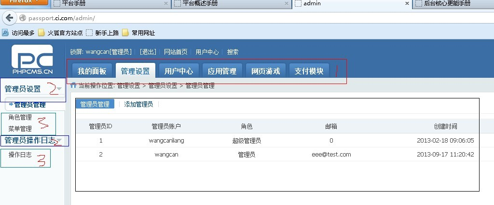
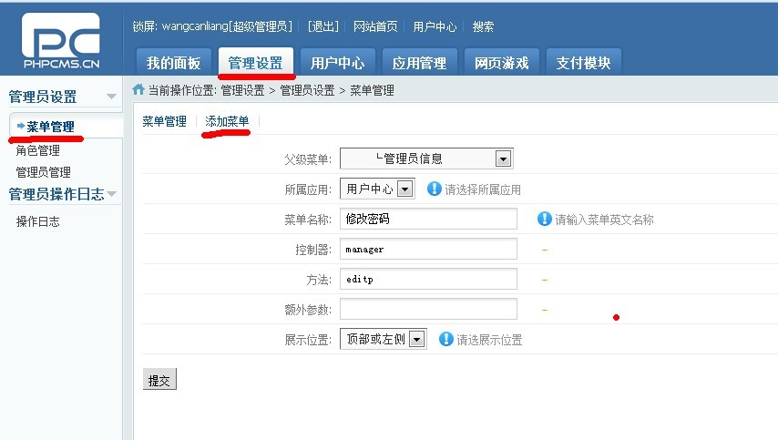

后台功能概述
这里的后台只针对passport应用（用户和后台核心模块）、webgame应用（网游模块）、pay应用（充值和支付模块）。后台的页面和样式借用了开源项目PHPCMS的后台页面和样式，功能实现则是基于CI框架实现的。平台的后台采用三级树形菜单的形式来实现后台操作，如下图所示

图中的数字是菜单的级别
数字1 ： 指一级菜单，不执行实际的管理操作，仅仅用来对操作进行分类管理，一级菜单主要基于应用和应用下大的功能模块来对后台操作菜单进行分类，目前一级菜单有六个，分别是passport应用下的“我的面板”、“管理设置”、“用户中心”、“应用管理”；webgame应用下的“网页游戏”、pay应用下的“支付模块”
数字2 ： 指二级菜单，隶属于某一级菜单，同一级菜单一样，二级菜单也不执行具体的操作，主要是基于功能对菜单的进一步分类，如图中的一级菜单“管理设置”下又细分了两个二级菜单，分别是“管理员设置”和“管理员操作日志”
数字3 ： 指三级菜单，隶属于某一二级菜单，执行具体的管理操作，会在后台的主体部分展示操作的执行结果，如图中的三级菜单“管理员管理”隶属于二级菜单“管理员设置”，单击该操作时，后台的主题部分会显示该操作的结果，即列出管理员信息，可以在管理员信息页面上执行更细化的管理员的增删改查等操作
下面先介绍一下一级菜单“我的面板”和“管理设置”下的各个操作，这些操作只跟后台相关，前端页面和平台用户不会也不需要看到这些操作。其他的后台操作会在接下来的文档中结合前端做介绍。
后台管理之菜单管理
功能：以树状结构展示所有菜单。需要额外说明的是：菜单的增加或编辑，如下图：

编辑或添加菜单时的注意事项
1 ： 父级菜单决定了菜单的级别，虽然可以将某一菜单设置为四级或四级以上菜单，但这些菜单是无意义的，不会被执行。
2 ： 所属应用，必选项。这里指基于CI开发的三个应用，即passport应用、webgame应用和pay应用，所属应用决定了菜单的URL地址。
3 ： 菜单名称，必须填写
4 ： 控制器和方法，只对三级菜单有意义，一级和二级菜单的控制器及方法应该为空。菜单的执行依赖于平台架构中的PHP文件，每个控制器对应一个PHP文件，每个方法对应控制器文件中的一个函数方法。
5 ： 额外参数，这个选项暂时没有使用，保留以供扩展使用，暂时可以忽略。
6 ： 展示位置，定义菜单的展示位置，这块描述上还有些混乱，尚待进一步规范
7 ： 三级菜单的执行过程，三级菜单执行时，根据菜单的所属应用、控制器和方法，构造出一个URL，如上图“修改密码”这个操作的URL是：http://passport.nova.com:92/index.php/admin/menu/add/，其中http://passport.nova.com:92/index.php/是引用“用户中心”即passport应用的基地址，admin是平台为每个后台操作增加的一个标识为后台操作的字符串，menu是控制器，add则是方法。通过请求该URL，实现修改密码这个具体操作。
菜单管理应由程序员来维护管理，其他人员了解菜单的作用即可
后台管理之角色管理
功能：对后台管理员进行分类，除了超级管理员外（超级管理员角色的id为1，可以执行所有后台操作），每个角色对应一个权限列表，具备该角色的管理员只能看到并且只能执行权限列表中的后台操作。角色管理机增删改时的注意事项
1 ： 新增加的角色不具备任何权限，需要执行该角色对应的“角色权限”操作为该角色增加权限
2 ： 编辑或添加角色时，角色名是必填项
3 ： 编辑或添加角色时，如果设置某一角色设置为“禁用”状态，则该角色下的管理员将无法登陆后台
角色决定后台管理员的权限，增删改时应慎重！
后台管理之管理员管理
功能：对后台管理员进行分类，除了超级管理员外（超级管理员角色的id为1，可以执行所有后台操作），每个角色对应一个权限列表，具备该角色的管理员只能看到并且只能执行权限列表中的后台操作。角色管理机增删改时的注意事项
1 ： 编辑或添加管理员时，角色决定了管理员的后台操作权限，应慎重
2 ： 编辑或添加管理员时，如果设置某一管理员“是否锁定”为“锁定”状态，则该管理员将无法登陆后台
后台管理之操作日志
管理员在后台执行操作时，会直接影响到前端功能的实现和效果，甚至会导致平台产生严重的错误。为了实现管理员操作的责任制，管理员进行增删改等操作时，均会被记录到后台日志系统中，具有查看日志权限的管理员，可以通过后台操作日志，定位某一操作发生时的详细信息
后台管理之我的面板
功能：编辑和查看当前登录到后台的管理员信息
修改个人信息 ： 查看当前管理员信息，并可以修改真实姓名和邮箱等信息
修改密码 ： 该操作较为重要，应慎重对待
操作记录 ： 查看当前管理员的增删改等操作记录